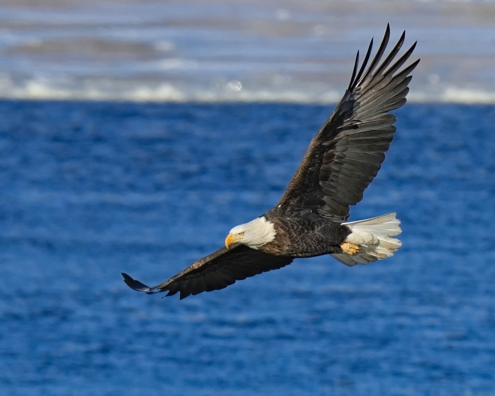
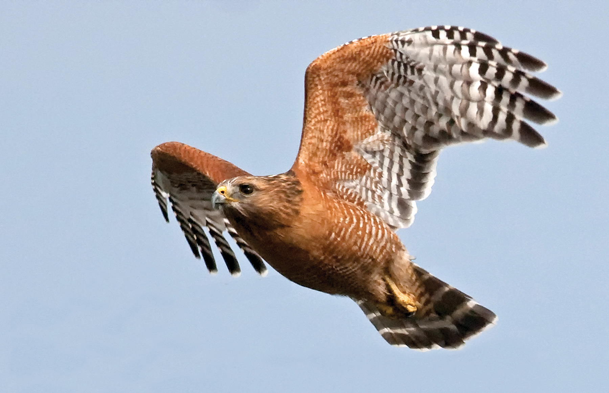
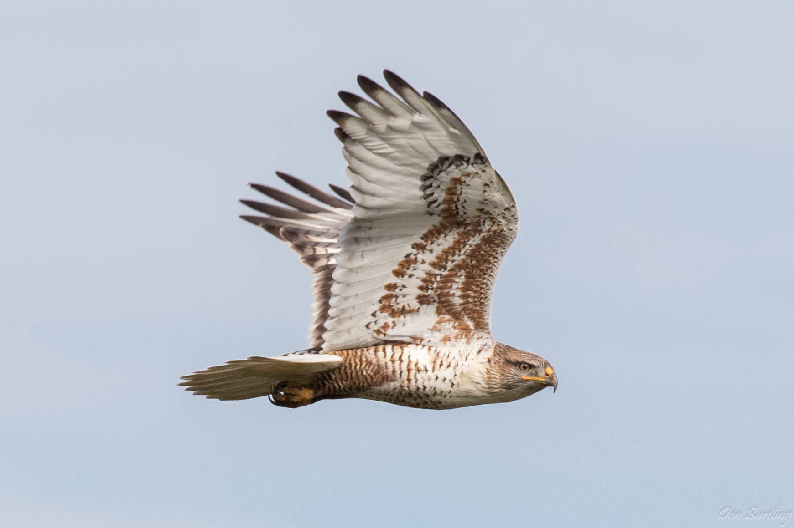
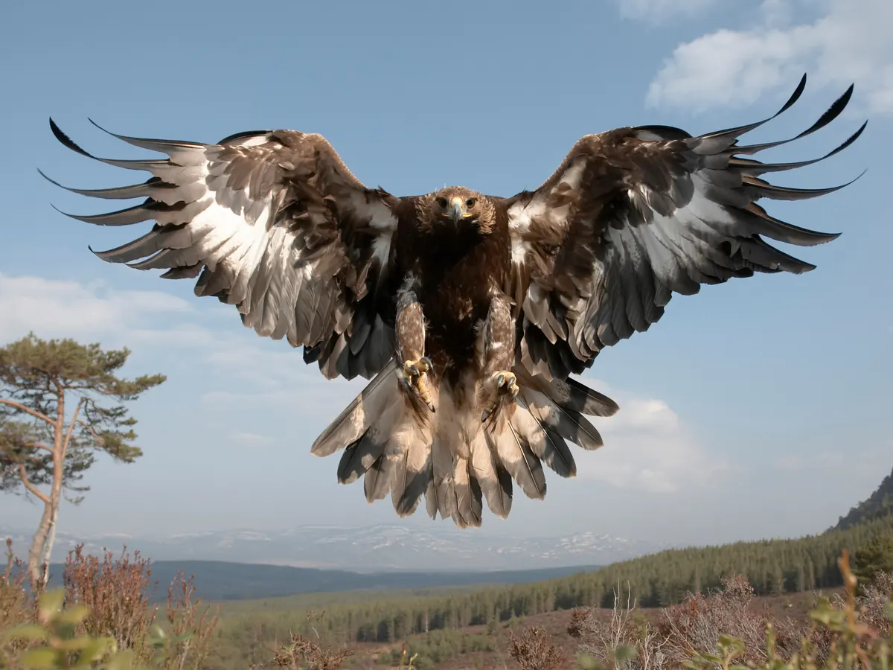
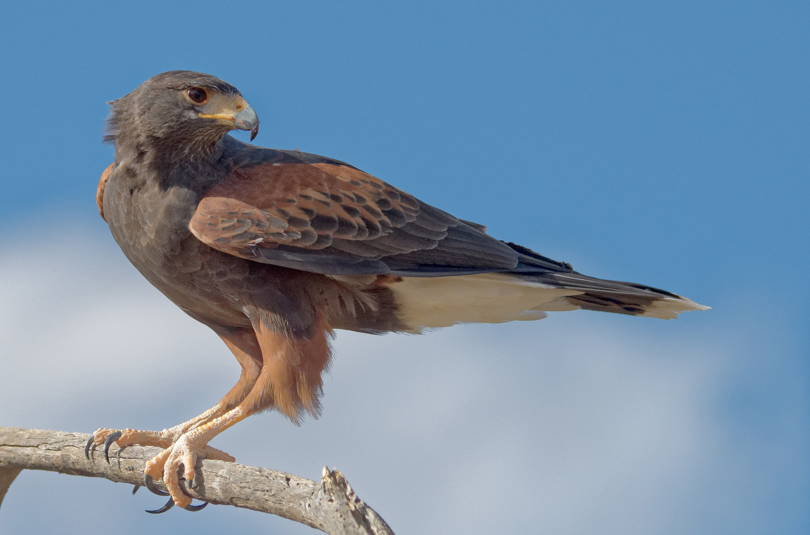
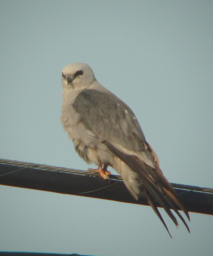

Accipitriformes(Hawks, Eagles, Kites, and Allies)
This webpage is a library that will send you to information about specific Accipitriformes living in San Diego.
\
Some interesting facts about the Bald Eagle
- Their Wingspan can grow to 7.5 ft
- They live to about 20-30 Years
- They can weight up to 14 lbs
- They can reach up to 99 mph when diving

Some interesting facts about the Red Hawks
- Their Wingspan can grow to 3.64 ft
- They live to about 13-25 Years
- They can weight up to 1.7 lbs
- They can reach up to 120 mph

Some interesting facts about the Ferruginous Hawks
- Their Wingspan can grow to 4.67 ft
- They live to about 23.7 Years
- They can weight up to 3.31 lbs
- They can reach up to 150 mph when diving

Some interesting facts about the Golden Eagle
- Their Wingspan can grow to 7.7 ft
- They live to about 30 Years
- They can weight up to 15 lbs
- They can reach up to 300 mph when diving

Some interesting facts about the Harris Hawk
- Their Wingspan can grow to 3.96 ft
- They live to about 12 Years
- They can weight up to 3.6 lbs
- They can reach up to 120 mph when diving

Some interesting facts about the Mississipi Kite
- Their Wingspan can grow to 2.6 ft
- They live to about 8 Years
- They can weight up to 1 lbs

Some interesting facts about the Northern Harrier
- Their Wingspan can grow to 3.5 ft
- They live to about 16 Years
- They can weight up to 1 lbs
- They can reach up to 23 mph when diving
Images Taken From (in order):
- (Bald Eagle) https://www.nationaleaglecenter.org/eagle-glossary/
- (Red Hawk) https://baynature.org/article/the-clarion-call-of-the-red-shouldered-hawk/rpavek_red-shouldered-hawk-_1178093/
- (Ferruginous Hawk) https://www.allaboutbirds.org/guide/Ferruginous_Hawk/overview
- (Gold Eagle) https://www.theguardian.com/commentisfree/2019/aug/18/scotland-golden-eagles-are-dying-in-agony-in-the-name-of-sport
- (Harris Hawk) https://www.audubon.org/field-guide/bird/harriss-hawk
- (Mississipi Kite) https://www.inaturalist.org/guides/408
- (Northern Harrier) https://www.parksconservancy.org/park-e-ventures-article/elusive-mystifying-northern-harrier